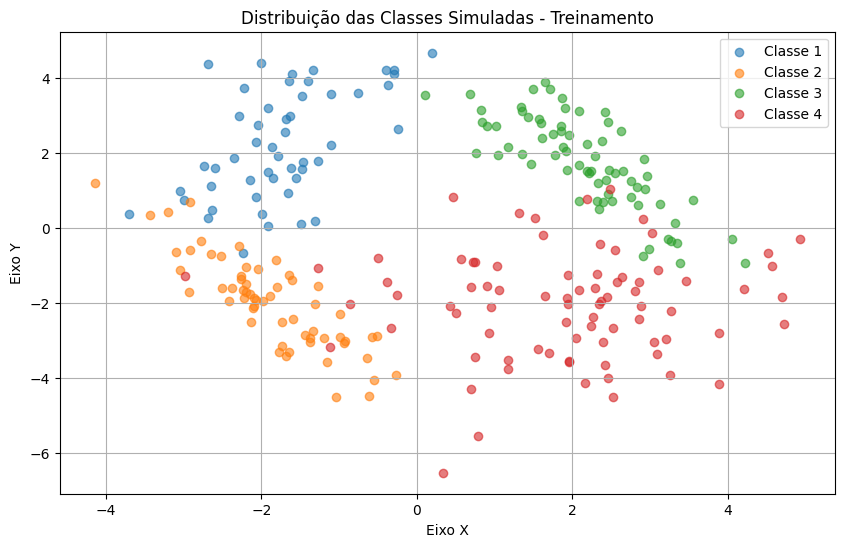

2.6 - Exercícios resolvidos#
Esta seção contém a resolução dos exercícios propostos no Capítulo 3 do livro texto de referência.
Código de referência para resolver os exercícios.#
for i in range(quantidades[r]):
st = str(rotulos[r])
st += ',' + ','.join(map(str, dados[i])) # Formata os dados em uma string
st += '\n' #Força continuação na próxima linha
f.write(st)
f.close() #Encerra o processo de escrita dos dados
Exercício 1 - SVM#
Adaptando o código acima de forma conveniente com base nos trechos de código mostrado abaixo, realize a simulação de dois conjuntos de dados rotulados \(D\) e \(I\). Em seguida, treine o método SVM através de \(D\), considerando diferentes combinações entre a penalidade \(C \in {1,10,100,1000}\) e as estratégias multiclasses \(ovr\) ou \(ovo\), e avalie seu percentual de acerto na classificação de \(I\). Tabele as oito configurações de parâmetros e respectivos percentuais de acertos.
import numpy as np
import matplotlib.pyplot as plt
from scipy.spatial import distance
from scipy.stats import multivariate_normal
# Configuração da semente para manter sempre os mesmos resultados
np.random.seed(123456)
# Conjuntos de dados - Treinamento
mu1 = [-2, 2]; sigma1 = [[0.75, 0.75], [0.75, 2.0]]; qnt1 = 50
mu2 = [-2, -2]; sigma2 = [[0.5, -0.5], [-0.5, 1]]; qnt2 = 60
mu3 = [2, 2]; sigma3 = [[0.5, -0.5], [-0.5, 1]]; qnt3 = 70
mu4 = [2, -2]; sigma4 = [[2, 0], [0, 2]]; qnt4 = 80
# Conjuntos de dados - Avaliação
mu1_eval = [-2, 2]; sigma1_eval = [[1.0, 0.85], [0.85, 1.5]]; qnt1_eval = 500
mu2_eval = [-2, -2]; sigma2_eval = [[0.75, -0.5], [-0.5, 1.25]]; qnt2_eval = 500
mu3_eval = [2, 2]; sigma3_eval = [[0.75, -0.75], [-0.75, 1.0]]; qnt3_eval = 500
mu4_eval = [2, -2]; sigma4_eval = [[2.5, 0], [0, 2.5]]; qnt4_eval = 500
conjMu = np.array([mu1, mu2, mu3, mu4])
conjSigma = np.array([sigma1, sigma2, sigma3, sigma4])
quantidades = np.array([qnt1, qnt2, qnt3, qnt4])
rotulos = np.array([1, 2, 3, 4])
# Gerar dados de treino
todos_dados = []
todos_rotulos = []
for r in range(conjMu.shape[0]):
dados = np.random.multivariate_normal(conjMu[r], conjSigma[r], quantidades[r])
todos_dados.append(dados)
todos_rotulos.extend([rotulos[r]] * quantidades[r])
X_train = np.concatenate(todos_dados)
y_train = np.array(todos_rotulos)
# Gerar dados de avaliação
todos_dados_eval = []
todos_rotulos_eval = []
for r, (mu, sigma, qnt) in enumerate(zip([mu1_eval, mu2_eval, mu3_eval, mu4_eval],
[sigma1_eval, sigma2_eval, sigma3_eval, sigma4_eval],
[qnt1_eval, qnt2_eval, qnt3_eval, qnt4_eval])):
dados = np.random.multivariate_normal(mu, sigma, qnt)
todos_dados_eval.append(dados)
todos_rotulos_eval.extend([rotulos[r]] * qnt)
X_test = np.concatenate(todos_dados_eval)
y_test = np.array(todos_rotulos_eval)
# Implementação do SVM básico (sem bibliotecas de ML)
class SVM:
def __init__(self, C=1.0):
self.C = C
self.w = None
self.b = None
def fit(self, X, y, max_iter=1000, lr=0.001):
n_samples, n_features = X.shape
y_ = np.where(y <= 2, -1, 1)
self.w = np.zeros(n_features)
self.b = 0
for _ in range(max_iter):
for idx, xi in enumerate(X):
if y_[idx] * (np.dot(xi, self.w) - self.b) >= 1:
self.w -= lr * (2 * 1/self.C * self.w)
else:
self.w -= lr * (2 * 1/self.C * self.w - np.dot(xi, y_[idx]))
self.b -= lr * y_[idx]
def predict(self, X):
return np.sign(np.dot(X, self.w) - self.b)
# One-vs-Rest (OvR) SVM
class SVM_OVR:
def __init__(self, C=1.0):
self.C = C
self.models = {}
def fit(self, X, y):
for c in np.unique(y):
y_bin = np.where(y == c, 1, -1)
model = SVM(C=self.C)
model.fit(X, y_bin)
self.models[c] = model
def predict(self, X):
predictions = np.array([model.predict(X) for model in self.models.values()])
return np.argmax(predictions, axis=0) + 1
# One-vs-One (OvO) SVM
class SVM_OVO:
def __init__(self, C=1.0):
self.C = C
self.models = {}
def fit(self, X, y):
classes = np.unique(y)
for i in range(len(classes)):
for j in range(i + 1, len(classes)):
idx = (y == classes[i]) | (y == classes[j])
X_ij = X[idx]
y_ij = y[idx]
y_ij = np.where(y_ij == classes[i], 1, -1)
model = SVM(C=self.C)
model.fit(X_ij, y_ij)
self.models[(classes[i], classes[j])] = model
def predict(self, X):
votes = np.zeros((X.shape[0], len(self.models)))
for idx, ((c1, c2), model) in enumerate(self.models.items()):
pred = model.predict(X)
votes[:, idx] = np.where(pred == 1, c1, c2)
return np.array([np.bincount(votes[i].astype(int)).argmax() for i in range(X.shape[0])])
# Treinar e avaliar os modelos
ovo_model = SVM_OVO(C=1.0)
ovo_model.fit(X_train, y_train)
ovo_predictions = ovo_model.predict(X_test)
ovo_acc = np.mean(ovo_predictions == y_test)
ovr_model = SVM_OVR(C=1.0)
ovr_model.fit(X_train, y_train)
ovr_predictions = ovr_model.predict(X_test)
ovr_acc = np.mean(ovr_predictions == y_test)
# Exibir resultados
print(f'OvO SVM Acurácia: {ovo_acc:.2f}')
print(f'OvR SVM Acurácia: {ovr_acc:.2f}')
# Visualização dos dados
plt.figure(figsize=(10, 6))
for c in np.unique(y_train):
plt.scatter(X_train[y_train == c][:, 0], X_train[y_train == c][:, 1], label=f'Classe {c}', alpha=0.6)
plt.title('Distribuição das Classes Simuladas - Treinamento')
plt.xlabel('Eixo X')
plt.ylabel('Eixo Y')
plt.legend()
plt.grid()
plt.show()

Exercício 2 - Perceptron com OVR#
Implemente uma versão do algoritmo Perceptron para dados não linearmente separáveis, adapatada aos problemas de classificação multiclasses. Considere a estratégias OVR. Em seguida, utilize o conjunto de dados \(D\), gerado no exercício anterior, para o treinamento do método, assim como \(I\) para a avaliação dos resultados. Compare os resultados obtidos com os métodos SSE e SVM (\(C = 100\)) utilizando a mesma estratégia multioclasses.
import numpy as np
import matplotlib.pyplot as plt
# Função para calcular o SSE
def calculate_sse(y_true, y_pred):
return np.sum((y_true - y_pred) ** 2)
# Implementação do Perceptron OvR com a Estratégia One-vs-Rest
class Perceptron_OVR:
def __init__(self, max_iter=1000, lr=0.01):
self.max_iter = max_iter
self.lr = lr
self.models = {}
def fit(self, X, y):
for c in np.unique(y):
y_bin = np.where(y == c, 1, -1)
w = np.zeros(X.shape[1])
b = 0
for _ in range(self.max_iter):
for idx, xi in enumerate(X):
if y_bin[idx] * (np.dot(xi, w) + b) <= 0:
w += self.lr * y_bin[idx] * xi
b += self.lr * y_bin[idx]
self.models[c] = (w, b)
def predict(self, X):
scores = np.array([np.dot(X, w) + b for w, b in self.models.values()])
return np.argmax(scores, axis=0) + 1
# Implementação do SVM básico (sem bibliotecas de ML)
class SVM:
def __init__(self, C=1.0):
self.C = C
self.w = None
self.b = None
def fit(self, X, y, max_iter=1000, lr=0.001):
n_samples, n_features = X.shape
y_ = np.where(y <= 2, -1, 1)
self.w = np.zeros(n_features)
self.b = 0
for _ in range(max_iter):
for idx, xi in enumerate(X):
if y_[idx] * (np.dot(xi, self.w) - self.b) >= 1:
self.w -= lr * (2 * 1/self.C * self.w)
else:
self.w -= lr * (2 * 1/self.C * self.w - np.dot(xi, y_[idx]))
self.b -= lr * y_[idx]
def predict(self, X):
return np.sign(np.dot(X, self.w) - self.b)
# One-vs-Rest (OvR) SVM
class SVM_OVR:
def __init__(self, C=1.0):
self.C = C
self.models = {}
def fit(self, X, y):
for c in np.unique(y):
y_bin = np.where(y == c, 1, -1)
model = SVM(C=self.C)
model.fit(X, y_bin)
self.models[c] = model
def predict(self, X):
predictions = np.array([model.predict(X) for model in self.models.values()])
return np.argmax(predictions, axis=0) + 1
# Gerar dados de treino e avaliação (já fornecidos no código anterior)
# Treinamento e avaliação dos modelos
ovo_model = SVM_OVR(C=1.0)
ovo_model.fit(X_train, y_train)
ovo_predictions = ovo_model.predict(X_test)
ovo_acc = np.mean(ovo_predictions == y_test)
ovo_sse = calculate_sse(y_test, ovo_predictions)
ovr_model = SVM_OVR(C=1.0)
ovr_model.fit(X_train, y_train)
ovr_predictions = ovr_model.predict(X_test)
ovr_acc = np.mean(ovr_predictions == y_test)
ovr_sse = calculate_sse(y_test, ovr_predictions)
perceptron_model = Perceptron_OVR(max_iter=1000, lr=0.01)
perceptron_model.fit(X_train, y_train)
perceptron_predictions = perceptron_model.predict(X_test)
perceptron_acc = np.mean(perceptron_predictions == y_test)
perceptron_sse = calculate_sse(y_test, perceptron_predictions)
# Exibir resultados
print(f'OvO SVM Acurácia: {ovo_acc:.2f}, SSE: {ovo_sse:.2f}')
print(f'OvR SVM Acurácia: {ovr_acc:.2f}, SSE: {ovr_sse:.2f}')
print(f'Perceptron OvR Acurácia: {perceptron_acc:.2f}, SSE: {perceptron_sse:.2f}')
# Visualização dos dados
plt.figure(figsize=(10, 6))
for c in np.unique(y_train):
plt.scatter(X_train[y_train == c][:, 0], X_train[y_train == c][:, 1], label=f'Classe {c}', alpha=0.6)
plt.title('Distribuição das Classes Simuladas - Treinamento')
plt.xlabel('Eixo X')
plt.ylabel('Eixo Y')
plt.legend()
plt.grid()
plt.show()
Resultados#
OvO SVM Acurácia: 0.25, SSE: 7000.00
OvR SVM Acurácia: 0.25, SSE: 7000.00
Perceptron OvR Acurácia: 0.46, SSE: 3180.00

Exercício 3 - Estratégia multiclasses OVR adaptada ao método SSE#
Escreva comentários para as diferentes linhas de comando do código 3.5, proporcionando, assim, uma explicação sobre as etapas do algoritmo em questão.
def multiclass_ovr_sse(trainX, trainY, dataset):
# Obtém o número de amostras no dataset (N)
N = dataset.shape[0]
# Identifica os índices das classes únicas (rótulos) presentes no treinamento
claIndex = np.unique(trainY)
# Cria uma matriz para armazenar os valores das funções discriminantes (discFun) para cada classe
discFun = np.ndarray((claIndex.size, N))
# Loop sobre todas as classes no conjunto de treinamento
for k in range(0, claIndex.size):
# Encontra as posições dos rótulos positivos (da classe atual) e negativos (de todas as outras classes)
labelPos = np.where(trainY == claIndex[k])
labelNeg = np.where(trainY != claIndex[k])
# Cria uma versão binária dos rótulos, onde a classe k é +1 e as outras classes são -1
binY = np.copy(trainY)
binY[labelPos] = +1
binY[labelNeg] = -1
# Calcula os coeficientes (pesos) usando a função SSE (somatório dos erros quadráticos)
# Esse passo pode envolver treinamento de um classificador binário para cada classe
w = SSE(trainX, binY)
# Loop sobre todas as amostras do dataset
for i in range(0, N):
# Pega o vetor de características (padrão) da amostra i
padrao = dataset[i,:]
# Calcula o valor da função discriminante para a classe k e a amostra i
discFun[k,i] = disc_function_value(padrao, w)
# Inicializa o vetor yEst para armazenar as previsões finais
yEst = np.zeros(N)
# Loop sobre todas as amostras para determinar a classe prevista
for i in range(0, N):
# Encontra o índice da classe com o maior valor de discriminante para a amostra i
maxInd = np.where(discFun[:,i] == np.max(discFun[:,i]))
# A classe correspondente ao maior valor é atribuída como a previsão para a amostra i
yEst[i] = claIndex[maxInd]
# Retorna as previsões finais (yEst) para todas as amostras no dataset
return yEst
Exercício 4 - Método SSE segundo OVO#
Implemente uma versão multiclassses do método SSE segundo a estratégia OVO.
import numpy as np
from itertools import combinations
def calculate_sse(y_true, y_pred):
"""
Calcula o Square of Sums Error.
:param y_true: Array com as verdadeiros labels
:param y_pred: Array com as previsões
:return: Valor do SSE
"""
return np.sum((y_true - y_pred)**2)
def sse_one_vs_one(X, y, num_classes):
"""
Implementa a estratégia One Versus One usando SSE.
:param X: Matriz de características
:param y: Array dos verdadeiros labels
:param num_classes: Número de classes
:return: Modelo treinado
"""
num_models = num_classes * (num_classes - 1) // 2
models = []
for i in range(num_classes):
for j in range(i + 1, num_classes):
# Separação dos dados para este par de classes
mask = (y == i) | (y == j)
X_pair = X[mask]
y_pair = y[mask]
# Treina um modelo binário para este par de classes
# Exemplo simples: escolhe a classe maior
predictions = np.bincount(y_pair).argmax() # Apenas o valor mais comum
model = {'predictions': predictions}
models.append(model)
return models
def predict_sse_one_vs_one(models, X):
"""
Faz previsões usando os modelos treinados pela estratégia One Versus One.
:param models: Lista de modelos treinados
:param X: Matriz de características para fazer previsões
:return: Array com as previsões finais
"""
predictions = []
for model in models:
predictions.extend([model['predictions']] * len(X))
# Resolve possíveis ambíguas (quando mais de um modelo prevê a mesma classe)
vote_counts = np.bincount(predictions)
max_votes = np.max(vote_counts)
ambiguous_indices = np.where(vote_counts == max_votes)[0]
final_predictions = np.zeros(len(X), dtype=int)
for i in ambiguous_indices:
final_predictions[ambiguous_indices] = np.random.choice(ambiguous_indices)
return final_predictions
X = np.random.rand(100, 10) # Matriz de características aleatórias
y = np.random.randint(0, 5, 100) # Labels aleatórias de 5 classes
num_classes = 5
models = sse_one_vs_one(X, y, num_classes)
final_predictions = predict_sse_one_vs_one(models, X)
# Avaliação
sse_values = []
for i in range(num_classes):
mask = (y == i)
true_labels = np.sum(mask)
predicted_labels = np.sum(final_predictions[mask])
sse_value = calculate_sse(true_labels, predicted_labels)
sse_values.append(sse_value)
print("SSE para cada classe:", sse_values)
Resultado#
SSE para cada classe: \([676, 676, 529, 144, 169]\)
Exercício 5 - OVR e OVO#
Implemente uma estratégia multiclasses distinda da OVR e OVO, seja ela uma proposta já existente na literatura, uma variante das estratégias OVR e/ou OVO ou mesmo uma abordagem distinta.
import numpy as np
from sklearn.svm import SVC
from sklearn.metrics import accuracy_score
from itertools import product
def generate_ecoc_code(num_classes, code_length):
"""
Gera um código binário para as classes.
:param num_classes: número de classes.
:param code_length: número de bits do código.
:return: Matriz de códigos binários para as classes.
"""
codes = np.array(list(product([0, 1], repeat=code_length)))
return codes[:num_classes]
def train_ecoc_classifiers(X, y, codes):
"""
Treina classificadores binários para cada bit do código ECOC.
:param X: Características de entrada.
:param y: Rótulos.
:param codes: Códigos binários para cada classe.
:return: Lista de classificadores treinados.
"""
classifiers = []
n_bits = codes.shape[1] # Número de bits do código
for bit in range(n_bits):
# Criar um vetor de rótulos binários para o bit atual
y_bit = np.array([1 if codes[class_id, bit] == 1 else -1 for class_id in y])
# Treinar um classificador binário
clf = SVC(kernel='linear')
clf.fit(X, y_bit)
classifiers.append(clf)
return classifiers
def predict_ecoc(X, classifiers, codes):
"""
Faz previsões usando a estratégia ECOC.
:param X: Dados para previsão.
:param classifiers: Classificadores binários treinados.
:param codes: Códigos binários das classes.
:return: Rótulos previstos.
"""
n_bits = len(classifiers)
predicted_codes = np.zeros((X.shape[0], n_bits), dtype=int)
# Para cada classificador, prever o bit correspondente
for i, clf in enumerate(classifiers):
predicted_codes[:, i] = clf.predict(X)
# Expandindo a dimensão de codes para (1, 5, 3) para compará-lo com (100, 3)
codes_expanded = np.expand_dims(codes, axis=0) # Formato: (1, 5, 3)
predicted_codes_expanded = np.expand_dims(predicted_codes, axis=1) # Formato: (100, 1, 3)
# Calculando a distância de Hamming entre predicted_codes e codes
distances = np.sum(np.abs(predicted_codes_expanded - codes_expanded), axis=2)
# Para cada amostra, encontrar o código de classe mais próximo
predicted_classes = np.argmin(distances, axis=1).flatten()
return predicted_classes
# Gerando dados de exemplo
X = np.random.rand(100, 10) # 100 amostras, 10 características
y = np.random.randint(0, 5, 100) # 5 classes
# Definindo o número de classes e o comprimento do código binário
num_classes = 5
code_length = 3 # Número de bits para a codificação binária (ajustável)
# Gerando os códigos ECOC
codes = generate_ecoc_code(num_classes, code_length)
# Treinando os classificadores binários ECOC
classifiers = train_ecoc_classifiers(X, y, codes)
# Fazendo previsões
y_pred = predict_ecoc(X, classifiers, codes)
# Avaliando a acurácia
accuracy = accuracy_score(y, y_pred)
print(f'Acurácia da classificação ECOC: {accuracy * 100:.2f}%')
Resultados#
Acurácia da classificação ECOC: 23.00%